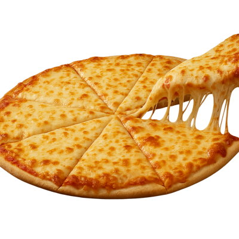
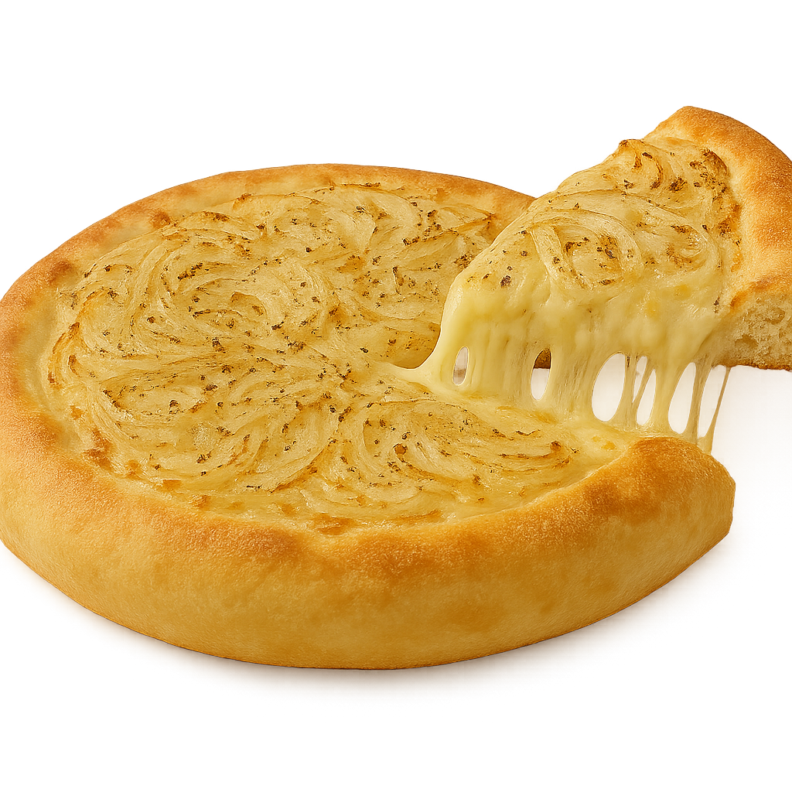
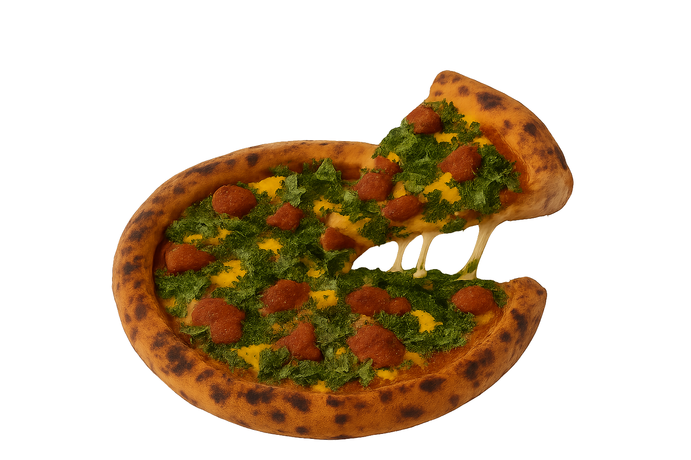

Tiene como ingredientes la masa que se hace con harina, sal, agua y levadura. Con una masa que sale pegajosa porque estiramos el bollo y la dejamos leudar, la marcamos en el horno y con una salsa de tomate casera, despues le colocamos la muzzarella y al deterrirse le ponemos un poco mas de salsa con oregano y al salir del horno aceitunas.
Tiene la misma preparación que la muzzarella, estiramos un bollo mas grande que el molde de la pizza porque tiene que ir a arriba el otro bollo, en la tapa ponemos 300 gramos de jamon, muzzarella 500 gramos y luego estiramos el otro bollo, lo ponemos arriba del bollo inferior,luego le ponemos la cebolla abundante, al terminar de cocinar oregano.
La misma preparación la masa,lleva como ingredientes salsa, jamón, muzzarella y longaniza,la ponemos al horno y a medio derretir le ponemos primero tomate en rodajas y despues morrones la devolvemos al horno,al terminar la sacamos del horno, le rallamos huevo y tambien se le pone morrón para que quede mas completa.La cebolla es cortada en juliana y condimentanda con bastante oregano,despues a la masa.
